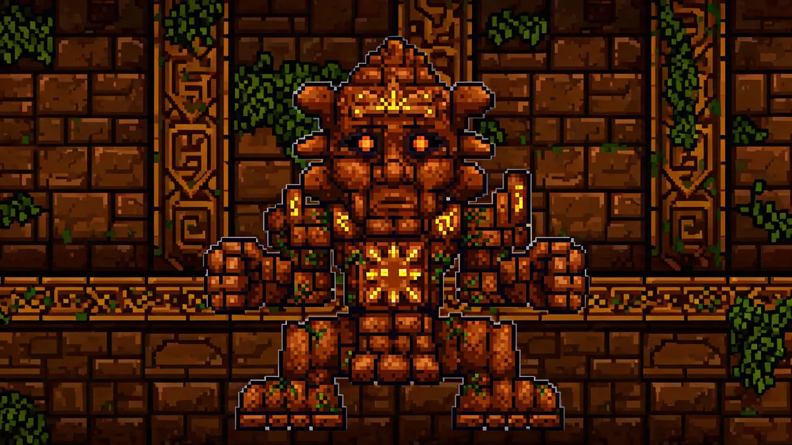

Golem Guide —Temple Guardian

| Property | Details |
|---|---|
| HP | 39,000 (Fist + Body) / 70,200 (Expert) / 89,505 (Master) |
| Damage | 50-70 (varies by attack) / 90-126 (Expert) |
| Defense | 12 (Body) / 0 (Fist) / 4 (Head after detached) |
| KB Resistance | 100% |
| Spawn | Use a Lihzahrd Power Cell at the Lihzahrd Altar in the Jungle Temple |
Easiest Post-Plantera Boss
Despite being a temple guardian, Golem is actually easier than Plantera for most players. The fight room is compact, his attacks are telegraphed, and his HP pool is modest for this stage of the game.
Preparation
- Armor: Hallowed or Chlorophyte is sufficient. Turtle Armor for melee. Spectre Armor for mages.
- Weapons: Terra Blade, Megashark with Chlorophyte Bullets, or any weapon that worked against Plantera. Golem has no special resistances.
- Accessories: Wings, Lightning Boots, class emblem, Star Veil.
- Arena: The Temple room itself works. Clear out any traps and place Campfires in corners. If you want more space, you can wire the traps to activate during the fight —they damage Golem too.
Strategy
Phase 1 —Both Fists Active
Golem's fists fire from his body and chase you. Destroying both fists prevents them from regenerating:
- Focus on one fist at a time. Each fist has about 7,000 HP.
- Once both fists are destroyed, they're gone for the rest of the fight.
- Dodge the fists by staying mobile —they track you but can't turn quickly.
- Golem's head fires a laser during this phase. It's easy to dodge.
Phase 2 —Head Detaches
Below 50% HP, Golem's head detaches and flies around the room firing lasers and spiky balls:
- Kill the flying head first. It has lower HP than the body.
- The body remains stationary but continues firing its laser.
- Use the body as cover from the flying head's attacks.
- After the head is destroyed, finish the body. It just fires a weak laser.
Temple Traps
The Jungle Temple is filled with traps (spiky ball traps, flame traps, dart traps). If you have wire cutters, you can rewire them to activate during the Golem fight —they deal significant damage to Golem and make the fight much faster.
Rewards —What's Worth Your Time
- Beetle Shells (75%) —Worth farming. Used to craft Beetle Armor, the best melee armor before Lunar Events. You need 36 shells for a full set, meaning 4-5 kills.
- Picksaw (25%) —Worth farming. The best pickaxe before Lunar Events. Mines Lihzahrd Bricks and all previous tiers. A significant upgrade from the Drax.
- Heat Ray (22.5%) —Strong magic weapon. Fires a continuous laser that pierces enemies.
- Stynger + Bolts (22.5%) —Ranged weapon with explosive bolts. Effective against crowds.
- Sun Stone (Expert) —Increases all stats during daytime. Pairs with Moon Stone for 24-hour coverage.
Related Guides
- Plantera Guide —defeat her to access the Temple
- Terra Blade Guide —great weapon for this fight
- Boss Progression Order